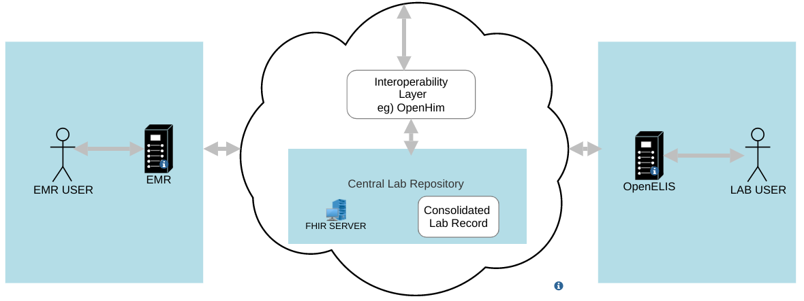

OpenELIS GLOBAL2 Implementation Guide - Local Development build (v0.1.0) built by the FHIR (HL7® FHIR® Standard) Build Tools. See the Directory of published versions
| Official URL: http://i-tech-uw.github.io/openelis-global-ig/ImplementationGuide/openelis | Version: 0.1.0 | |||
| Draft as of 2024-12-11 | Computable Name: OpenELISImplementationGuide | |||
This is the Implementation Guide covering the OpenELIS GLOBAL2 implementation of FHIR Exchange between OpenELIS Global and other FHIR-enabled health information systems For example OpenMRS EMR
This Implementation Guide contains standards-compliant, open specifications for the transmission of OpenELIS Global2 data between various health systems that do support HL7 FHIR.The contained specifications cover, for example, the following scenario:
This IG is based on guidance from the FHIR documentation on the hl7 fhir Resources
The top menu allows quick navigation to the different sections, and a Table of Contents is provided with the entire content of this Implementation Guide. (Be aware that some pages have multiple tabs).

OpenELIS Global2 Exchange supports the export of the following FHIR Resources
While this implementation guide and the underlying FHIR are licensed as public domain, this guide includes examples making use of terminologies such as LOINC, SNOMED CT and others which have more restrictive licensing requirements. Implementers should make themselves familiar with licensing and any other constraints of terminologies questionnaires, and other components used as part of their implementation process. In some cases,licensing requirements may limit the systems that data captured using certain questionnaires may be shared with.
The specification herewith documented is a demo working specification, and may not be used for any implementation purposes. This draft is provided without warranty of completeness or consistency, and the official publication supersedes this draft. No liability can be inferred from the use or misuse of this specification, or its consequences.